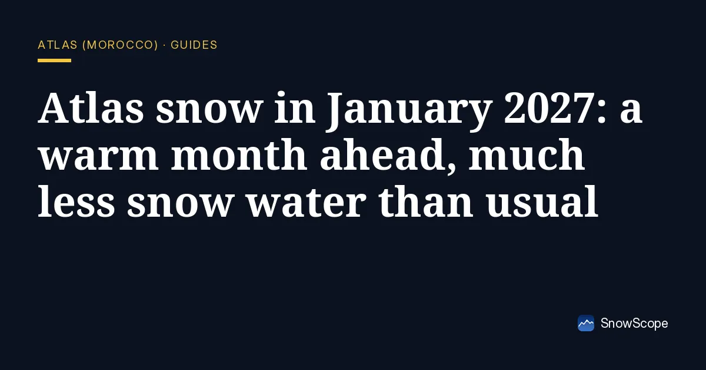
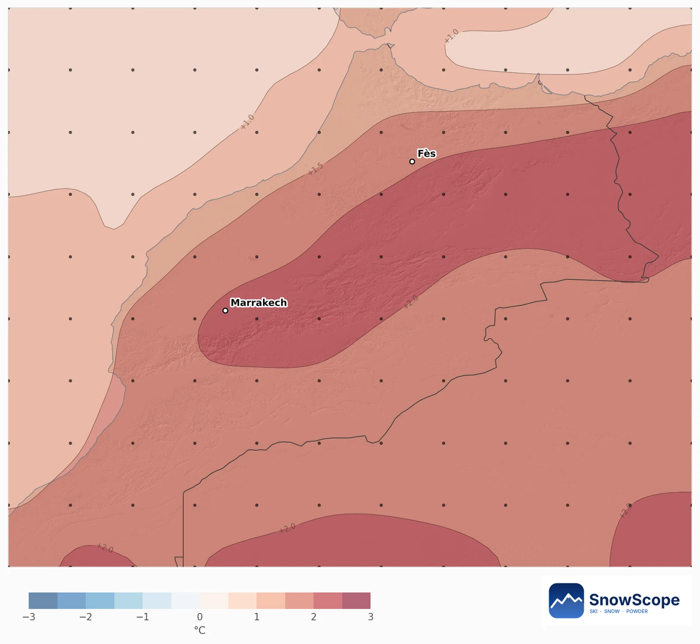
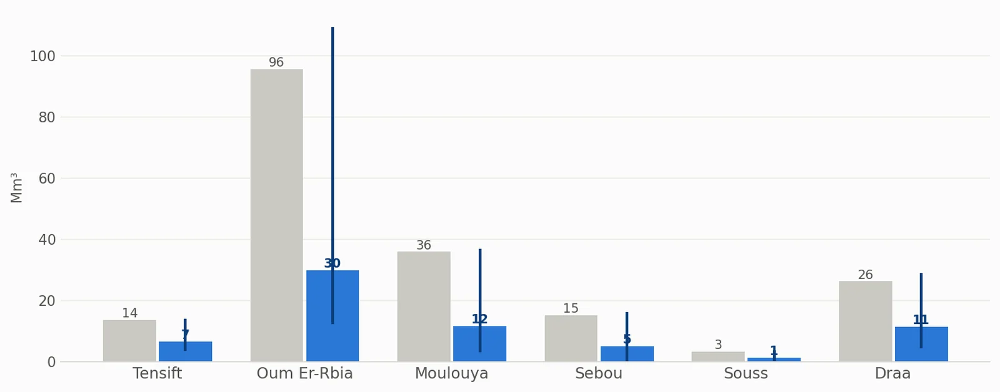
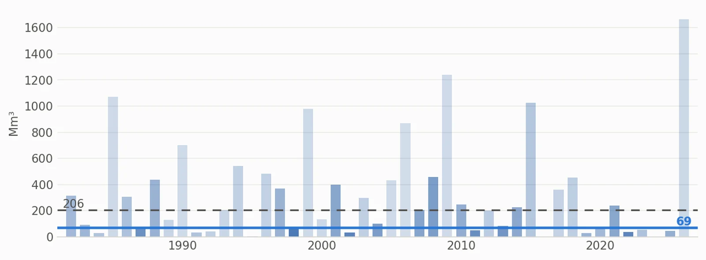

Atlas snow in January 2027: a warm month ahead, much less snow water than usual
A warm January lies ahead across Morocco's mountains. The seasonal forecast points to temperatures 2 °C above normal and near-normal rain, which together favour rain over snow on the middle slopes. With 45 past winters to draw on, the outlook is roughly one-third of a typical January's snow water: about 69 million m³ instead of 206.
See the live snow forecast for Atlas in the SnowScope appSnow depth, powder alerts and the 3D map, free.

Where the snow odds weaken
The SnowScope map splits the Atlas into areas of about 10 km and compares each one with its own history of Januaries. All the high ground that usually holds snow in this month now tilts drier. The chance that any area will have deeper snow than usual ranges from 24 % to 35 %, with a typical value around 28 %. Not one area leans towards a snowier month.
The pattern is consistent from west to east: Toubkal in the western High Atlas, M'Goun in the centre, Ayachi in the east, and Bou Iblane in the Middle Atlas all show the same lean.
Temperature and rain: when cold matters
The European forecast runs agree strongly that January will be warm: 92 to 94 % of the 51 runs put temperatures 1.9 to 2.2 °C above normal over the mountain basins. Rainfall stays close to the usual range, drifting between 5 % below and 1 % above normal across different areas.
In the Atlas, a few degrees shift the boundary between snow and rain. That line sits between 2000 and 2500 m elevation. When January is this warm, storms still deliver water—but on the middle and lower slopes it arrives as rain, not snow. Only the highest ridges and north-facing slopes above 2500 m hold the snow longer.


What the high massifs expect
On the summits (above 2500 m, or 2300 m on Bou Iblane), January's average snow depth is usually 5 cm on Toubkal, 6 cm on M'Goun, 10 cm near Ayachi and 8 cm on Bou Iblane. These are basin averages—sunny south faces melt fast, while north faces stay deeper. The outlook trims these by roughly half: to 3, 3, 5 and 4 cm.
Snow water equivalent (the water released by melting; 1 mm equals 1 litre per square metre) tells the drier story. A typical January holds 10 mm on Toubkal, 16 mm on M'Goun, 24 mm on Ayachi and 16 mm on Bou Iblane. The forecast cuts these to 7, 7, 12 and 8 mm. The fraction of high ground that holds any snow drops sharply: M'Goun from 69 % to 41 %, Ayachi from 77 % to 60 %.

Mountain water for the valleys below
Snow stores water for the rivers and dams that feed the lowlands in spring. Summed across all Morocco's mountains, a normal January holds 206 million m³ of water frozen in the snowpack. This forecast expects 69 million m³, a range most likely between 31 and 235, and only a 31 % chance of exceeding the usual total.
The Oum Er-Rbia basin, which drains the central and eastern High Atlas, usually holds 96 million m³ in January; the outlook is 30. The Moulouya (usually 36, outlook 12), Draa (usually 26, outlook 11), Sebou (usually 15, outlook 5) and Tensift (usually 14, outlook 7) all lean leaner. This January snow will melt through spring; unless February and March bring heavier snow, the rivers will carry less melt-water to the reservoirs.


Lessons from similar winters
The past Januaries whose weather was most like this forecast are 2016, 2024 and 1998. By comparing them, we see that leaner snow does occur in warm years, but it is not certain—one strong Atlantic storm can still dump snow across the high passes.
A seasonal outlook shifts the odds across the month, it does not lock in a single outcome. For decisions about skiing, water supply or snow travel, check the 7-day forecast as January unfolds and after storms arrive.
Tips for skiers
- Plan ski trips to the high Atlas for mid- or late January, after Atlantic storms, rather than at the month's start.
- Target the summits and north-facing slopes at 2500 m and higher: these retain snow longest in a warm month.
- Watch the SnowScope map daily in January to follow the snow line as it shifts after each storm; avoid bare ground.
- For water managers: a lean January means spring runoff will depend more on February–March weather. Monitor the full winter season, not this month alone.
- If the 7-day forecast shows a cold spell or storm coming, that is your cue to expect fresh snow; warm spells mean rain even on the high ground.
About these numbers
Resort snow depths are the deepest snow on the resort's upper slopes on the date shown; they are estimates for an area, not a measurement at one point. Forecasts can change. Always read the official avalanche bulletin before going off-piste.
Cite this report
For research, teaching or the press: the numbers and charts are free to reuse under CC BY 4.0 with this citation.
SnowScope (2026), Atlas snow in January 2027: a warm month ahead, much less snow water than usual, https://snowscope.app/blog/en/2026/11/atlas-january-2027-snow-outlook.html, accessed 2026-11-10
SnowScope (Atlas Labs). (2026, November 10). Atlas snow in January 2027: a warm month ahead, much less snow water than usual. SnowScope snow reports. https://snowscope.app/blog/en/2026/11/atlas-january-2027-snow-outlook.html
BibTeX
@misc{snowscope2026atlasjanuary2027snowoutl,
author = {{SnowScope (Atlas Labs)}},
title = {Atlas snow in January 2027: a warm month ahead, much less snow water than usual},
year = {2026},
month = nov,
howpublished = {\url{https://snowscope.app/blog/en/2026/11/atlas-january-2027-snow-outlook.html}},
note = {Published 2026-11-10 10:59 UTC; accessed 2026-11-10}
}· CC BY 4.0 · Methods, data and tools →
Follow Atlas
Free: a message when fresh snow is coming, and the forecast every morning.
More snow reports

About 65 mm on Toubkal by 12 November, but the 0 °C level stays near 4,000 m: rain at Oukaïmeden and in the valleys, snow only on the top.

The Atlas ski resorts have no snow today. Only 80 km² of white ground remains on the highest peaks, with the deepest at 9 cm. Data from 7 November.
Only the highest peaks hold snow in the Atlas today: 20 km² white, 6 cm deep. The ski slopes are bare. Data from 11 November.